Johanna & Tomi · 2022–2025
O, helga
podcast.
Yksi laulu. Monta jouluyötä. Kaikki aiempien vuosien podcastjaksot samassa arkistossa.
Jaksot
77 / 77
Lucka 24 - Umarell
Detta år frångår vi traditionen med Jussi Björling i sista luckan (men leta upp den och lyssna i alla fall). Luckan startar i norra Italien, via offentliga byggarbetsplatser, till konsertsalar med långa, manliga divor och fram till en välljudande överraskning alldeles i slutet. Vi bekantar oss med umarellversionen av låten och önskar alla en riktig god jul!
Luukku 23 - 6-7
Yksi, kaksi: takaisin alfageneraation pariin ja päivän sanaan, joka on kaksi numeroa (6–7). Paljon käytetty sana, jonka merkitystä kukaan ei oikeastaan tiedä. Päivän tekoälyversio herättää pahaa verta ja uhkaa kaataa koko joulukalenteriprojektin. Tuleeko tästä kaikesta fiasko? Entä miten AI onnistuu tonenin kanssa?
Lucka 22 - Tryckarlägenhet
Yo, välkomna till dagens lucka! Idag ska vi snacka om ett ord som luktar tunga grabbar och hårda tider. Vi pratar Gutenberg i bakfickan, svettiga högstadiediscon, krossat glas överallt och bilar som bränner iväg i natten. Fullt ös, ren action. Men frågan är – lever dagens version verkligen upp till ryktet, eller är det bara snack?
Luukku 21 - NPC
Onnittelemme Tomia nimipäivän johdosta! Tämän päivän luukussa tapaamme toisen hahmon, jonka juuret ovat tietokonemaailmassa. Mitä sanotaan laiskasta ihmisestä, joka ei ole oman elämänsä agentti? Ja miltä kuulostaa NPC-versio laulusta? Puhumme itsenäisyydestä ja kriittisestä ajattelusta, ihmisenä olemisen perustasta. Tervetuloa päivän syvälliseen luukkuun.
Lucka 20 - Terian
Inför denna lucka har Johanna förlorat en livstid i försöket att hitta en djurframförd version av O helga natt. I brist på en sådan vänder vi oss till Duris släktträd, där vi hittar inspiration till årets Therianversion av O helga natt. Vi njuter av en version som borde locka de flesta däggdjur till sång.
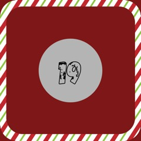
Luukku 19 - Beige flag
Lippu huipulla: kuuntelemme blogin kaikkien aikojen ensimmäistä latinankielistä versiota! Mutta laulaako hän rallilatinaksi? Mitä muita kummallisuuksia Tomi ja Johanna löytävät tämän päivän versiosta? Ja entä tonen: onko se yhtä korkealla lipputangossa kuin beige lippu?
Lucka 18 - Swiftiepappa
Where has THIS been? Det blir inte en version med och av Taylor Swift, eller Taylor Smith som Tomi kallade henne i somras - men kanske av hennes pappa? Nej, men vi pratar glitter, känslor och kreditkort och mjukispappor. Vi pratar klarblå ögon och gråtande pappor vid grilen.
Luukku 17 - Kevin
Surullisia uutisia kaikille Kevineille! Tutustumme todella huonoon versioon, ja se on erityisen… Kevin. Palaamme vanhaan versioon, joka oli mukana jo joulukalenterin ensimmäisellä kaudella. Onko joku nukahtanut sohvalle vai kilpailevatko he poikabändi-ulvonnassa? Entä miten oli tonenin laita?
Lucka 16 - Soft girl
Idag lyssnar vi på en riktigt mjuk version av O helga natt. En halvjazzig, vacker och oengagerad version. Men är detta egentligen en skräckfilmversion? Eller en julfilmversion? Hur går det med tonen i dagens version? Krossar den glastaket?
Luukku 15 - Rallisuomi
Tuleeko tänään KAJ-versio? Älä huoli, tänään ei baadata bastua. KAJ-versiota O helga nattista odotellessa, tutustutaan ruotsisuomalaiseen version. Tomilla ja Johannalla on eriävät mielipiteet kappaleen syntikasta. Tutustumme ralliversioon, jossa kuljettaja on kiistatta taitava
Lucka 14 - Slop
Dagens lucka kombinerar teknologi och arkeologi. Vad får vi om vi blandar Hercule Poirot, AI och gamla keramikskärvor? En snabb och alldeles för originell version för att vara SLOP – som dessutom är dagens nyord. En ny subgenre föds: barnkammarversionen.
Luukku 13 - Kakkakeräin
Johanna nousee saippualaatikon päälle ja pitää palopuheen Luciasta. Tomi jatkaa teknisellä linjalla päivän uudissanalla, joka ei liity Baeziin vaan kylläkin ”baissiin”. Kuuntelemme suoraviivaista, mekaanista versiota. Mutta onko se liian sujuvaa?
Lucka 12 - Romantasy
I dagens lucka ska vi bekanta oss med en lyckad hybridbulle. Vi ger oss ut på resa i världen – den verkliga världen – och landar i Kanada, med dess romantiska och fantastiska landskap. Lastbilsromantik möter fantasy-country i en version som åtminstone piggar upp Johanna.
Luukku 11 - Droonimuuri
Tänään puheenaiheena on Euroopan puolustuspolitiikka. Tutustumme puolustusvoimien oi jouluyö-versioon, jossa pitkät hiukset ja järeät kaliiperit elävät sovussa Marvelin supersankarien kanssa. Tomi näkee tässä karaokevertion, kun taas Johannan mielestä kyseessä on kirkollinen versio. Polkaistaan käyntiin päivän luukku!
Lucka 10 - Rawdogga
Idag ger vi oss på en oförberedd version – en impulsiv och spontan variant som delar opinionen. Johanna är inte helt övertygad, men Tomi diggar denna version, som dessutom har erotiska kopplingar. Undrar vad hunden Duri tycker om denna hundrelaterade ohelga-version?
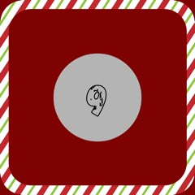
Luukku 9 - Piparoffee
Mitä yhteistä on 1970-luvun brittiläisellä politiikalla ja olympialaisten avajaisilla? Ei mitään muuta kuin tämänpäiväinen ohelga-versio! Tutustumme makeaan versioon – ehkä jopa liian makeaan – mutta onko se olymppialaisvoittaja? Ja kuinka herkullinen tämän päivän tonen on?
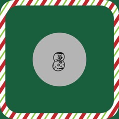
Luukku 8 - Grisch
Dagens nyord tar oss till toppen av guldberget. Tomi ser blandningar av högt och lågt, Johanna anar en ljudtekniker som har tagit kaffepaus. Allt är inte guld som glimmar, glitter och glam betyder inte alltid rikedom, inte heller att tonen skulle sitta.
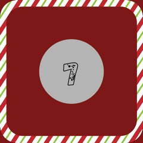
Lucka 7 - Sigma
Ehdottomasti paras ja itsevarmin versio kaikista uudissanoista ja Oi jouluyöstä ikinä? Johanna pohtii, kenen tyttö se oikein on, ja sitä, ettei teknisesti paras kuitenkaan aina tarkoita parasta.Tomi puolestaan löytää huomautettavaa esityksestä, joka olisi voinut saada ikkunaruudut säröilemään.
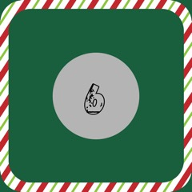
Lucka 6 - Dubbelsänkning
Glad självständighetsdag från studion och O helga natts ekonomiavdelning! Vi pratar siffror så att vi knappast begriper något själva ens. Men någonstans bakom siffrorna och procenterna och finns både sanning och intimitet. Nyordet indikerar något som går neråt men hur är det med tonen - når den nya höjder?
Luukku 5 - Farkkumuna
Muutumme filosofisiksi ja pohdimme, mikä on todellista tämän päivän epätodellisessa maailmassa. Siellä, jossakin taiteen ja todellisuuden välissä, löydämme sekä päivän version Oi jouluyö -laulusta että päivän uudissanan. Päivän luukku paljastaa kakofonisen dance-version, joka huokuu kipinäsadetta ja tiukkoja farkkushortseja.
Luukku 4 - Coolcation
I dagens version bekantar vi oss med ett högaktuellt teleskopord som leder funktionsjackorna hela vägen ut i Norrlands vidsträckta landskap. Vi lyssnar på en intim kyrkoversion som inte lämnar någon kall, en trygg version i en föränderlig värld.
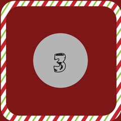
Luukku 3 - Milleniaalisukat
Päivän luukku ja päivän uudissana paljastavat enemmän kuin ainakaan Tomi olisi halunnut. Puhumme polvista, tarkemmin sanottuna sukupolvista. Kotirintamalla paljastuu joukko rikoksia. Ja sitten kuuntelemme riisuttua versiota laulusta.
Luukku 2 - Avocadoskanner
Dagens lucka innehåller framtidens teknik! Vi bekantar oss med en nykomling på fruktavdelningen, fyra grader av grönt och norsk populärkultur. Dagens version är en ny favorit för oss båda. En kristallklar, stämningsfull version - men hur går det med tonen?
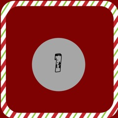
Luukku 1 - Chad
Tervetuloa vuoden joulukalenteriin, jonka teemana ovat uudissanat. Mutta emme unohda O helga natt -laulua, vaan etsimme sen erilaisia versioita, jotka sopivat uudissanoihin! Aloitamme jollakin todella siistillä, jossa on perhossiipiä – perinteinen koulun joulujuhlaversio. Avaa tämän päivän luukku, niin saat tietää, mikä uudissana on kyseessä – ja mitä versiota analysoimme!
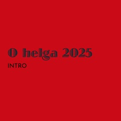
2025 O helga Intro
Jo joutui armas aika! Och helt lit jul! Sen myötä alkaa myös monien Roman empire, O Helga julkalender, ei yhtään Sus. I årets julkalender lyfter vi fram nya ord – och till varje ord hittar vi den ”O helga natt”-version som känns helt rizz. Kom och lyssna med!
2024 O helga Intro
Ja tapahtui niinä päivinä, että kulttuurileikkausten tuulet puhalsivat myös meidän pienen mutta sydämellisen tuotantomme ylle. Ei löytynyt sijaa vanhoille tavoille, ja niinpä O Helga -podcast syntyi uudelleen, uudenlaisena joulun ihmeenä, Instagramin digitaaliseen seimeen.
Lucka 24, liha-alan jalostusyrityksen suosikki
Liha-alan jalostusyrityksen suosikki “over there”, mahdollisesti myös JBS-yhdistyksen lemppari. Vi återupplever den legendariska versionen med den aldrig hittills besegrade, fenomenala och fantastiska Jussi Björling. God jul, oikein hyvää joulua!
Lucka 23, kimalteen jumalatar
Har man sju små hundar som flyger första klass och badar badkar med en, så bara måste man klara både ton och sång - eller hur? Päivän luukussa kuulemme uuden version viime vuoden suosikkiartisteista. Maissipopin kuningatar, kimalteen jumalatar ja kaikkien joulukuningattarien äiti: Mariah Carey: O Holy Night.
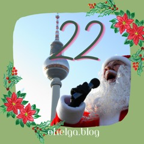
Lucka 22, aufregend!
Aufregend! Otetaan samalla podcastin ensimmäinen saksalainen versio koskaan! Tyska och lite jazzvibbar må vara otippad kombination i en sång som kräver mjuka konsonanter och en vänlig röst. Päivän luukussa löydämme Marion Willmannsin Heilige Nacht (Oh Holy Night).
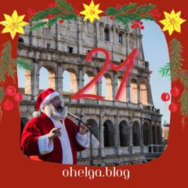
Lucka 21, version av sången av the popstar among tenors!
Vi följer upp med en italiensk version av sången av the popstar among tenors! Onko italialainen versio yhtä nykivä kuin espanjalainen? Ja kysymys, jonka kaikki esittävät: miten tonen onnistuu italiaksi? I dagens lucka: Silvio d’Anza: O Santa Notte.
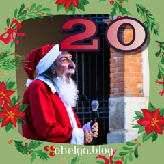
Lucka 19, TikTok version?
Podcastin lähes kahden vuoden pituisessa historiassa esitellään ensimmäinen espanjalainen versio! Men står karln och sjunger från pappret? Ja onko tonenin laulaminen mahdollista, jos laulaa espanjaksi? Päivän luukussa laulaa Endo Rivera: Oh Santa Noche (En Vivo)
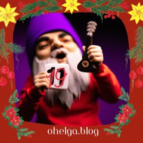
Lucka 19, TikTok version?
En version av en artist som gör musik “för den som vill dansa och skrikgråta”. Taiteilija kuuluu uuteen sukupolveen ja on saanut räjähdysmäisen uran TikTokissa. Mutta onnistuuko hän vangitsemaan huomiomme muutamassa sekunnissa vai selatemmeko eteenpäin? I dagens lucka: Dani Sylvia: O Holy Night.
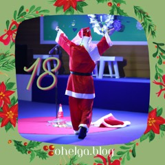
Lucka 17, 1970-luvun versio
Päivän kysymys vie meidät kirjallisuuden lupauksien maahan: mikä kirja sopisi seuraksi tälle versiolle? En version med ganska bra ös, ifall man är en sådan som faller för rockversioner. Päivän luukussa Sohyang: O Holy Night.
Lucka 17, 1970-luvun versio
Äntligen en chanson-version! Johanna blir som vanligt till sig i trasorna. Kirkas ja kaunis 1970-luvun versio, joka nousee kun muut laskevat ja laskee kun muut nousevat . Hur går det med tonen? Och vad säger Tomi? I dagens lucka: Nana Mouskouri: Minuit Chrétiens.
Lucka 16, en stor vän av Japans kultur
YOLO! LOL, TGIF! Cringe läpänheitto sikseen, tämän päivän luukussa kohtaavat suuri lahjakkuus ja glamrock, kuitenkin aika perinteisessä versiossa. Vi får träffa en stor vän av Japans kultur när ännu en artist som skördat framgångar i melodifestivalen presenterar sin version. Päivän luukussa YOHIO: O helga natt.
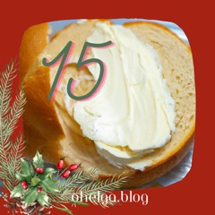
Lucka 15, viikinkiversio!
Smöret puttrar på i kastrullen i dagens lucka. Otetaan viikinki, otetaan kymmenentuhatta punaista ruusua, otetaan hali-rakkauslauluja, ja sekoitetaan niitä päivän versioksi. I denna lucka hittar vi Christer Sjögren: O helga natt.
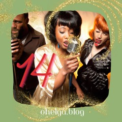
Lucka 14, en tjejgrupp med talang och attityd
Nyt on aika kammata hiukset ja pukeutua paljettimekkoon! I dagens version hör vi en grupp som gjorde sextiotalet till det sextiotal det var, en föregångargrupp, en tjejgrupp med talang och attityd. Men hur klarar de tonen? Päivän luukussa: The Supremes: O Holy Night (Bonus Track / 2015 Mix Version).
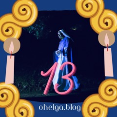
Lucka 13, Norjan kaikkien aikojen myydyin joululevy!
Fjolårets Lucia i julkalenderpodcasten sjöng med vibrato och pondus. Vuoden Lucialla on hauras ääni, joka on vienyt hänet pitkälle maailmalle. Päivän versio tulee Norjan kaikkien aikojen myydyimmältä joululevyltä. I dagens lucka: Sissel med O, Helga natt.
Lucka 12, med pudelpermanent
Laita essu päällesi, sillä päivän luukussa tapaamme monipuolisen taiteilijan, joka laulaa ja kokkaa(mahdollisestiyhtäaikaa)! Johannafår80-talsvibbarmedpudelpermanent,men undrar om den här versionen vet vad den vill vara? Luukussa: Patti La Belle: O holy night.
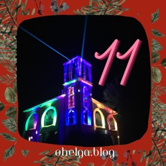
Lucka 11, Gåsehudsgaranti?
Gåsehudgaranti på denna? Mikä yhdistää poliitikkoa, poraajaa, käsityöläistä ja integraation vastuuhenkilöä? No, laulu tottakai! I dagens lucka kommer en efterfestversion i form av Nese Media: O helga natt.
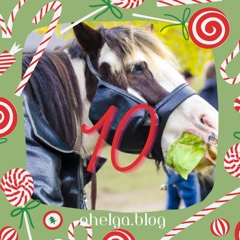
Lucka 10, ehtooton suosikki?
Tuleva “ehtooton” suosikki? Gårdagens häst travar in i dagens lucka och serveras nattvard. Laulajalla on kaunis ääni ja esittää kauden ensimmäisen rock-konserttiversion. Päivän Luukussa: Ilta ja Oi jouluyö.
Lucka 9, David Lynch
På tal om rymd: universum tycks dra ihop sig och samlas i dagens version av sången. Tässä yhdistyvät Johnny Cashin rytminen musiikki, David Lynchin kiehtova mystiikka, murhia, konjakki ja Lucky Luken ... hevonen. Päivän luukussa: Chris Isaak: O Holy Nigth.
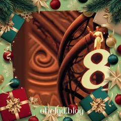
Lucka 7, retrovibbar och urringning
Tänään tarjoilemme todellista klassikkoa. Tämä versio oli monien kuulijoiden pyynnöstä viime vuonna, Ja kukaan ei voi sanoa, ettemme kuuntele kuuntelijoitamme! Denna version har rymd, denna version ÄR ett eget universum. Men hur går det med tone? I dagens lucka: Mahalia Jackson: O Holy Night.
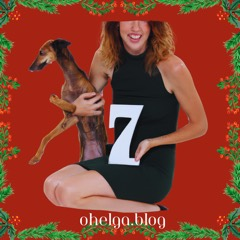
Lucka 7, retrovibbar och urringning
I dagens lucka finns en version med “spekulativ urringning”. Kuinka paljon Tomi tietää ruotsalaisesta euroviisukulttuurista ja populaarikulttuuri-juoruista? Hur många poäng får denna version med retrovibbar? Päivän luukussa: Charlotte Perelli (Mats Rondin): Cantique de Noël (O Holy Night).
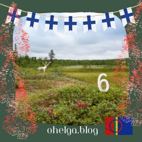
Lucka 6, elokuvaversio
Hyvää itsenäisyyspäivää! Glad självständighetsdag! Päivän luukussa juhlimme tunnelmallisella ja erilaisella elokuvaversiolla. Vi pratar vidsträckta landskap och franska revolutionens vackra budskap. I dagens lucka: Kajsa Balto: O bassi idja (O Holy Night).
Lucka 5, frågan om julskiva
“Vem *@! vill göra en julskiva?” Det får ni reda på i dagens avsnitt. Luukussa on versio, jossa on paljon tunnetta ja herkkyyttä. Mutta miten kävi tonenin kanssa, miten kävi tonenin kanssa, miten KÄVI TONENIN kanssa? Luukussa: Peter Jöbacks O, Helga natt.
Lucka 4, familjen McLendons vardagsrum
Det jammas i familjen McLendons vardagsrum, porslinet klingar och kocken har ett litet sammanbrott i köket. Hänen äänensä on kaunis, mutta riittääkö se yhtä kauniiseen arvosanaan?Tomidrabbasavålderskrisidagensavsnitt. Iluckan:SamaraJoy(feat.The McLendon Family) och O Holy Night.
Lucka 3, kylän pojan versio
Kylän poika ja koko kansan idoli pohjoisesta toimittaa päivän luukun! Johanna utbrister i säsongens första kärleksförklaring, Tomi går på skolans julfest. Vuorossa on vuoden ensimmäinen avaruusversio. Tämän päivän luukussa: Antti Tuiskun versio Oi jouluyöstä.
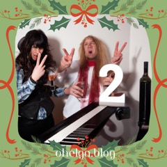
Lucka 2, efterfestversion
Årets första efterfestversion! Vem har somnat i soffan? Onko versio tarpeeksi korkea? Onko se tarpeeksi matala? Ja mikä on arvosana? I luckan: Högt och lågts version av O helga natt.
Lucka 1, munkkiversio
Ensimmäisessä luukussa kuulemme munkkiversion. Munkki siis henkilönä, ei leivonnaisena. Denna gudomliga röst tog honom från klostret in till Abbey Studios. Luukussa Friar Alessandron Cantique de Noël (O holy night).
0 Suomenkielinen intro
Olipa kerran…. Kuinka ihminen alkaa tekemään podcastia (monen kauden verran) yhdestä ainoasta laulusta? Perjantaina 1.12. alkaa uusi kausi ja ensimmäinen luukku aukeaa!

0 Svensk intro
Det var en gång… Hur kommer man på att göra en podcast (i flera sänsonger) om endast och bara O helga natt?
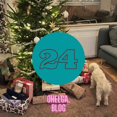
24. Perfektionen.
Herkkä, mahtava, kaunis ja täydellinen!
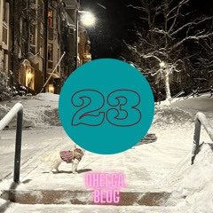
23. Soft spot <3
Versionen av juldrottningen med ett röstregister bredare än en trefilig motorväg.
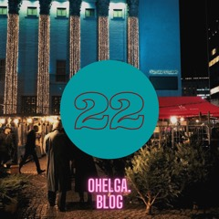
21. Meidän versio <3 <3 <3
Tästä kaikki alkoi niinkuin oikeesti
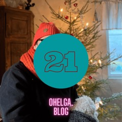
21. Krumelurikaramelli
Parempi ja puhtaampi söpöily-parisuhde-deittailu-versio, olkaa hyvät
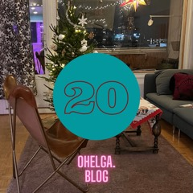
20. "Juodaan verta ja huudetaan ties mitä"
Vi introducerar genren gospel-heavy-dansbands-kyrkokonsert-bil-humppamusik.
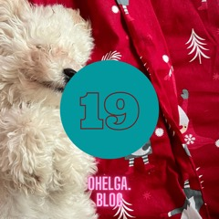
19. Kaatunut kahvikuppi
Dimmad belysning, röd sammetsklänning, fyrkantig mick…
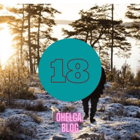
18. Musikaldrillen
Här drillas det som en fågel en sommarmorgon.
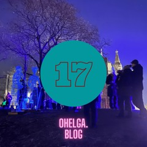
17. Noel, Noel! Tuu's kotiin!
Ännu en koppling mellan O helga natt och Eurovision Song Contest.
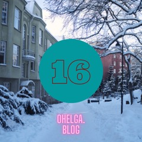
16. Avaruusversio.
En syntetisk version
15. Versionen med absolut mest känsla
Tänään tutustutaan suihkukaappi -genreen!
14. Hyvää yötä, kullan kuvia...
Kvinnan med panflöjtsrösten släpper loss luukussa neljätoista.
13. Människorättsaktivisten tar ton!
Är det eller är det inte en powerballad?
12. Versionen som har händerna i fickorna
Bingle-bongle, bingle-bongle…
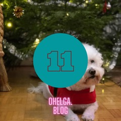
11. Förlåt!
Artisten som förenar insektvärlden med Kalle Anka och den humanistiska hedersdoktorn.
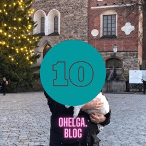
10. Som en sorgsen kärleksfilm <3
Johanna hittar en ny favorit i denna rispappersrulle. Puumajassa asuva artisti hurmaa, mutta tepsiikö Tomppaan?Linkit kappaleeseen: Apple Music: Karita Mattila - Cantique de Noel, "Oi jouluyö" Spotify: Karita Mattila - Cantique de Noel, "Oi jouluyö"
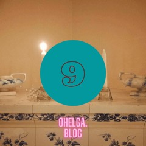
9. Kyrkoversionen av klassiska versionen av kyrkoversionen
Tänään Turun Yliopiston humanistisen tiedekunnan kunniantohtori laulaa meille!
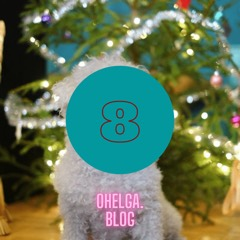
8. Valitut palat: lyhennetty versio
Luukku 8: Slaktarens son bjuder på en retroversion.
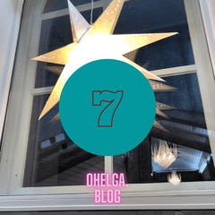
7. The Knife:s version. Not!
Lucka 7: Denna version kunde vara inledningen till Bondfilmen The man with the golden stämband, tycker Tomi.
6. Laskentatoimen professori vai Thillin successori?
Luukku 6: Idag föreslår vi sällskap till groggen som bäst avnjuts framför den öppna spisen.
5. Suomen Carola mutta ei
Joulukalenterin viides luukku.
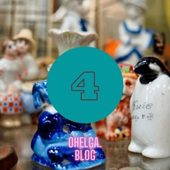
4. Drottningen av julpopeurovisionsfestivalen
Det som är säkert är lika säkert som flugsmättan på flugan!
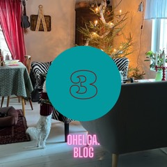
3. Serenadi vai sokeri-yliannostus?
Tomi purskahtaa itkuun, mutta miksi? Johanna visar sin milda och förstående sida.
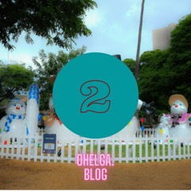
2. Som en svartvit film.
Tästä kaikki alkoi.
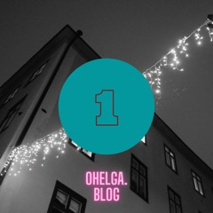
1. Isojen salien versio
Joulukalenterin ensimmäinen luukku
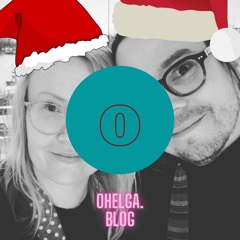
0 vad är det här för podd?
Snart är det är dags för julkalenderpodden O, helga!
Hakua vastaavia jaksoja ei löytynyt.
Jaksot ja esittelytekstit ovat alkuperäisillä kielillään, suomeksi tai ruotsiksi.